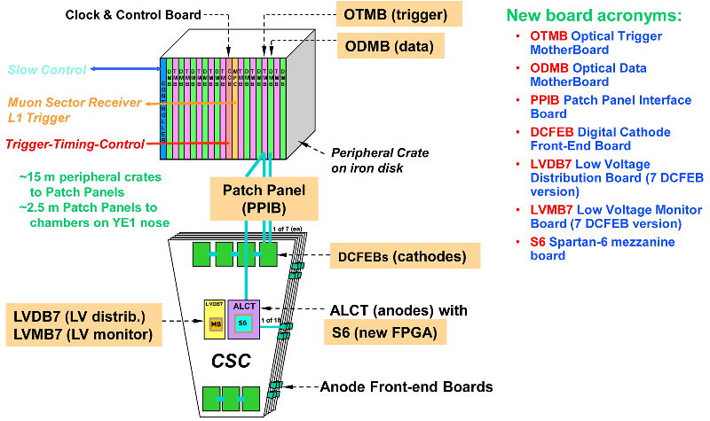

ME1/1 upgrade
Replacement of the current cathode front-end boards is proposed for Phase 1 by “digital” DCFEB boards that flash-digitize every channel rather than using a custom analog storage pipeline (SCA chips). The smaller size of the DCFEB boards should allow us to place seven of these boards on each ME1/1 chamber, and thereby recover muon trigger capability in the rapidity range 2.1 to 2.4. In order to read out the new DCFEB optical links, their trigger and readout boards (TMB and DMB) will need revision. The CFEB, TMB, and DMB cards currently operating on ME1/1 chambers will be recycled by moving them to the lower-rate ME4/2 chambers.
It is proposed to upgrade the Muon Port Cards with high speed optical links and FPGAs, since they are currently the major CSC trigger data bottleneck, allowing only three muon stubs to be transmitted per crossing per 60-degree trigger sector. The Muon Port Cards send their data over optical links to the CSC Track Finder’s Sector Processor cards, so they should be upgraded at the same time, i.e. for Phase 1 (described in the TriDas section of this proposal).
It is proposed to upgrade the ALCT mezzanine cards for Phase 1. These cards are the largest source of deadtime to the entire CMS experiment caused by periodic resets of neutron single-event upsets (SEUs). Moreover, the position resolution of the ALCT trigger can be greatly improved to match the η resolution given by the Phase 1 pixel trigger upgrade (described in the TriDas section of this proposal), and significantly better time resolution can be achieved in order to implement a “slow muon” type trigger for heavy stable charged particles.
